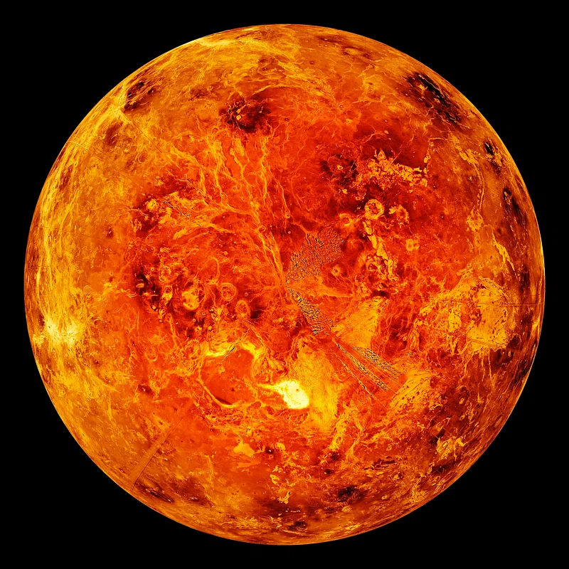

|  |
|
Aunque Venus no es el planeta más cercano al Sol, es el más caliente. Tiene una atmósfera densa, llena de dióxido de carbono, que provoca el efecto invernadero, y de nubes compuestas de ácido sulfúrico. Los gases atrapan el calor y mantienen a Venus bien calentito. De hecho, hace tanto calor en Venus que metales como el plomo serían charcos de metal fundido. |